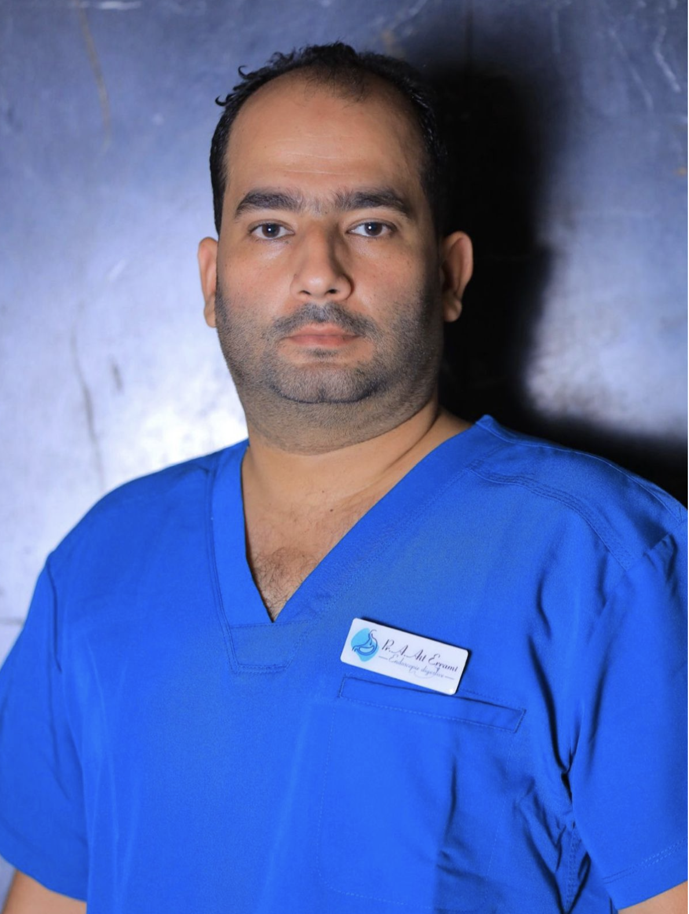

Qu'est-ce que la CPRE ?
La CPRE (Cholangiopancréatographie Rétrograde Endoscopique), aussi appelée ERCP en anglais, est une procédure endoscopique avancée qui permet d'explorer et de traiter les maladies des voies biliaires et du pancréas. Elle combine une endoscopie digestive haute et une imagerie radiologique en temps réel (fluoroscopie).
Contrairement à la chirurgie ouverte ou laparoscopique, la CPRE ne nécessite aucune incision. Elle est réalisée par voie naturelle, en introduisant un endoscope flexible par la bouche jusqu'au duodénum, là où les canaux biliaires et pancréatiques se rejoignent.
Indications de la CPRE
La CPRE est recommandée pour :
- Calculs du cholédoque — extraction des calculs biliaires bloquant le canal cholédoque (lithiase de la voie biliaire principale)
- Sténoses des voies biliaires — rétrécissements d'origine bénigne (post-chirurgicale, sclérosante) ou maligne (cancer du pancréas, cholangiocarcinome)
- Pose de prothèses biliaires — stenting pour drainer la bile et soulager l'ictère obstructif
- Sphinctérotomie endoscopique — section du sphincter d'Oddi pour faciliter le passage de la bile
- Maladies du pancréas — pancréatite chronique, calculs pancréatiques, sténoses du canal de Wirsung
- Bilan des voies biliaires — exploration en cas d'ictère, de douleur biliaire ou d'anomalie au scanner/IRM
Déroulement de la CPRE
La procédure se déroule en unité d'endoscopie sous sédation profonde ou anesthésie générale, supervisée par un médecin anesthésiste. Le patient est à jeun depuis au moins 6 heures.
L'endoscope est introduit par la bouche et guidé jusqu'au duodénum. Un cathéter est ensuite inséré dans le canal biliaire pour injecter un produit de contraste, permettant de visualiser les voies biliaires sur l'écran de fluoroscopie. Selon la pathologie, le médecin procède à l'extraction de calculs, la dilatation d'une sténose ou la pose d'une prothèse.
La durée de la procédure varie de 20 à 60 minutes selon la complexité. Une surveillance postopératoire de quelques heures est nécessaire.
Préparation du patient
- Jeûne strict de 6 heures avant la procédure
- Bilan sanguin préalable (NFS, coagulation, groupe sanguin)
- Arrêt temporaire des anticoagulants et antiagrégants (à discuter avec le médecin)
- Présence d'un accompagnant le jour de la procédure obligatoire
- Pas de conduite automobile le jour même
Expert en CPRE à Marrakech

Pr. Adil Ait Errami
Gastroentérologue – Professeur Universitaire
Chef de l'Unité d'Endoscopie Digestive
CHU Mohammed VI de Marrakech
Le Pr. Adil Ait Errami est le référent en CPRE au CHU Mohammed VI de Marrakech. Il a bénéficié d'une formation spécialisée en CPRE au CHU El Kasr El Ayni du Caire (2019) et dans des centres européens d'excellence. Il réalise des centaines de CPRE chaque année avec un taux de succès élevé et un profil de sécurité optimal.
Son expertise couvre la CPRE standard (extraction de calculs, sphinctérotomie) et la CPRE complexe (sténoses malignes, prothèses biliaires multiples, CPRE pré-chirurgicale). Il exerce également en clinique privée à Marrakech pour les patients souhaitant un suivi ambulatoire.